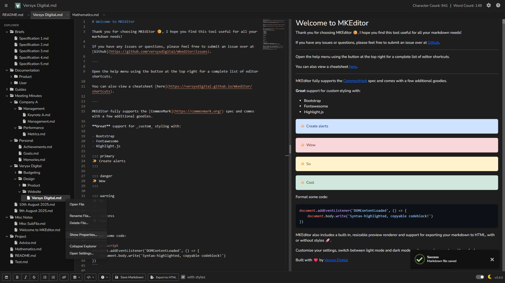

MKEditor - A simple markdown editor.
Download MKEditor
Quickly and easily get started writing your markdown documents with MKEditor's rich set of features.


Quickly and easily get started writing your markdown documents with MKEditor's rich set of features.
Write with confidence using the full CommonMark markdown specification, with extra features for alerts, syntax highlighting, and custom styling.
Built-in, resizable HTML preview powered by Bootstrap and Highlight.js, letting you see styled or unstyled output in real time.
Switch between light and dark mode, toggle word-wrap, and export your markdown to clean HTML or Bootstrap-styled documents.
MKEditor stores its configuration settings in a JSON file located at %USERPROFILE%/.mkeditor/settings.json.
If the file does not exist when the application starts, MKEditor automatically creates it with a full set of default values. This ensures the application is ready to run out of the box without requiring manual configuration.

Enter, following the indentation level of the previous line. This is especially useful for lists, code blocks, and nested content.
MKEditor is also available as a fully-featured web application, allowing you to write, preview, and export markdown directly in your browser without installing the desktop app. The web version offers the same CommonMark support, live preview renderer, and export options as the Electron-based application.
This makes it ideal for quick edits, collaborative sessions, or working on devices where installing software isn’t possible. Simply visit the MKEditor web page to start writing instantly - no downloads, no setup, just open and go.